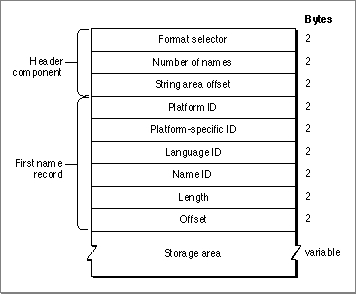

The Font Naming Table
The font naming table, with a tag name of'name', is shown in Figure 4-21. This table contains multilingual strings associated with the outline font resource. These strings can represent copyright notices, font names, style names, and so on, and each string is stored in a separate record with some information about what kind of string it is. You may want to provide this information in your application for the user, or you may want to use it to check one version of a font against another.
The header component of the font naming table consists of the following elements:Each name record contains information about the platform and language of the strings stored in the naming table.
- Format selector. The format selector (set to 0). This is an unsigned integer.
- Number of names. The number of name records that follow. This is an
unsigned integer.- String area offset. The offset from the start of the table to the start of string storage, in bytes. This is an unsigned integer.
The storage area at the end of the naming table contains the actual string data.
- Platform ID. The platform identifier.
- Platform-specific ID. The platform-specific encoding identifier.
- Language ID. The language identifier.
- Name ID. The name identifier.
- Length. The length of the string, in bytes.
- Offset. The offset from the start of storage area, in bytes.
There is no length limit for the strings contained in a name record, but font designers should not include empty strings (of byte length 0). The Font Manager sorts the entries in the naming table first by platform identifier, next by platform-specific identifier, next by language identifier, and last by name identifier.
To keep the size of this table small, a font designer may make a limited set of name records in a small set of languages, because the font can be localized and the existing strings translated or new strings added. Other parts of the outline font resource that need these strings can refer to them by their index number, and applications that need a particular string can look it up by its platform identifier, language identifier, and font name identifier. Platform IDs are shown in Table 4-2, language identifiers are shown in Table 4-4, and font name identifiers are shown in Table 4-5.
TrueType outline fonts are available on other platforms besides the Macintosh computer, which is why the font designer must specify the platform. There are only four predefined platform identifiers, listed in Table 4-2, and they use values 0 through 3.
When the platform used is the Macintosh computer, the platform-specific identifier names the specific script code for this name record. The script codes defined for the Macintosh system software are listed in the chapter "Script Manager" in this book.
The platform-specific identifier encodings for the ISO platform are listed in Table 4-3.
Table 4-3 ISO platform-specific identifiers Code ISO encoding scheme 0 7-bit ASCII 1 ISO 10646 2 ISO 8859-1 The value of the language identifier specifies the language in which a particular
string is written. The language identifiers available on the Macintosh platform are
listed in Table 4-4.The font name identifier values, listed in Table 4-5, contain the strings with information about the font.
The full font name for a font family, given in string 4 of Table 4-5, is most often the same as the family name, given in string 1. The default style for a family or the only font in a family should have "Regular" in the font style string. (Font designers use the term "Regular" to denote the plain style for a font, so as to reflect typographic terminology more accurately.) One exception, based on historical convention, is when the full name of a font includes the word "Roman" (e.g. Times Roman). In all other cases, the full name should be made up of the family name and the style name, as in Bookman Bold.
The unique font identification consists of the designer's name, followed by a space serving as a separator, followed by the full name of the font. For example, though there might be many Symbol fonts, the name "Apple Computer Symbol" is unique. The use of unique names allows applications to determine if the current system software has the fonts used in the original document.